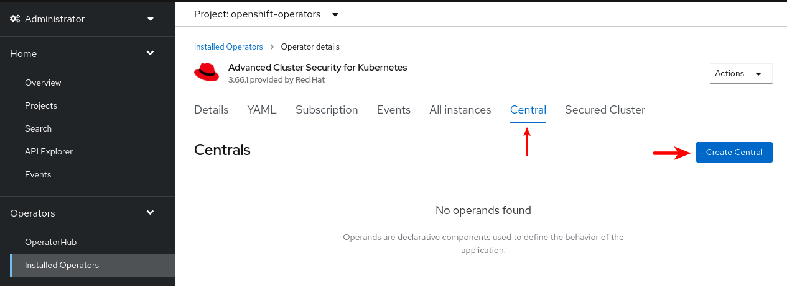
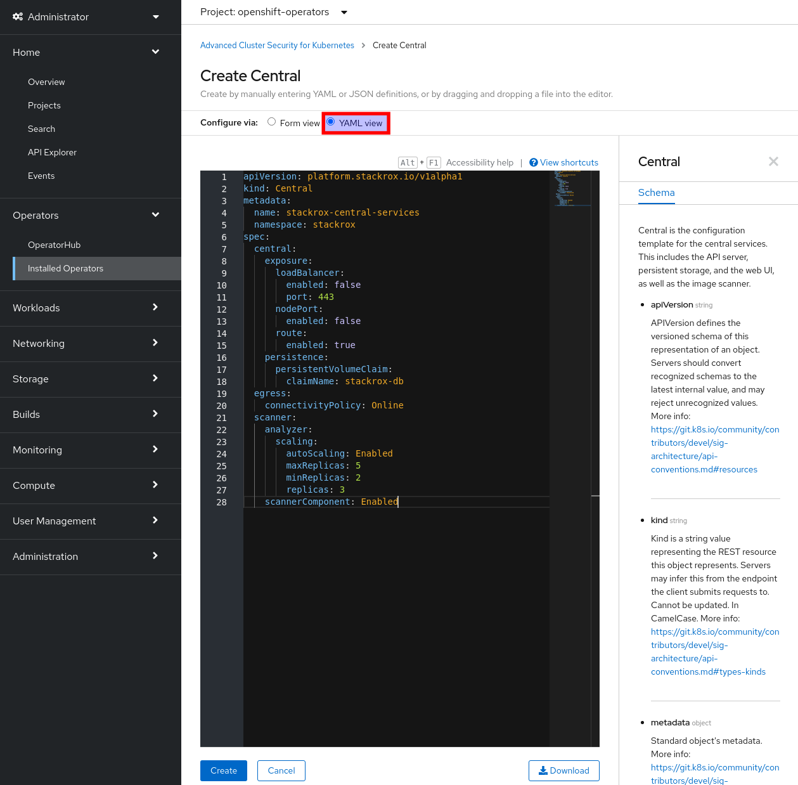
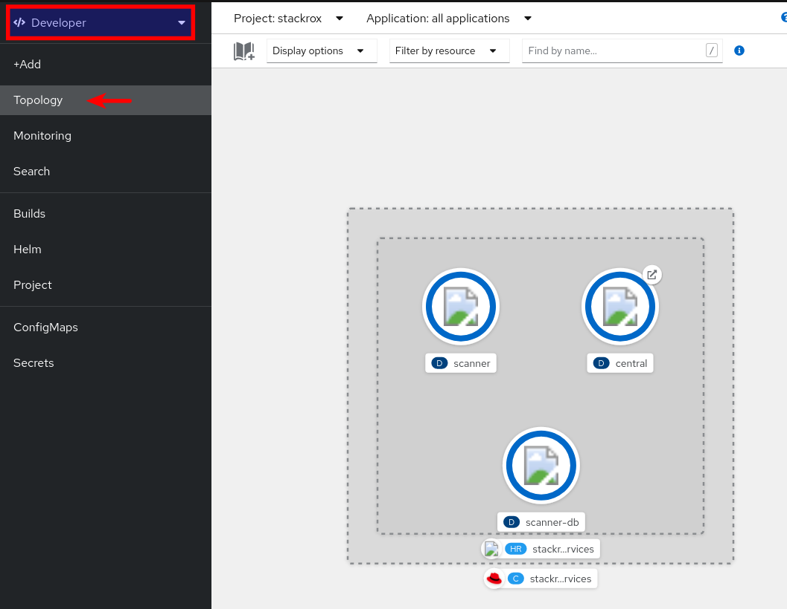
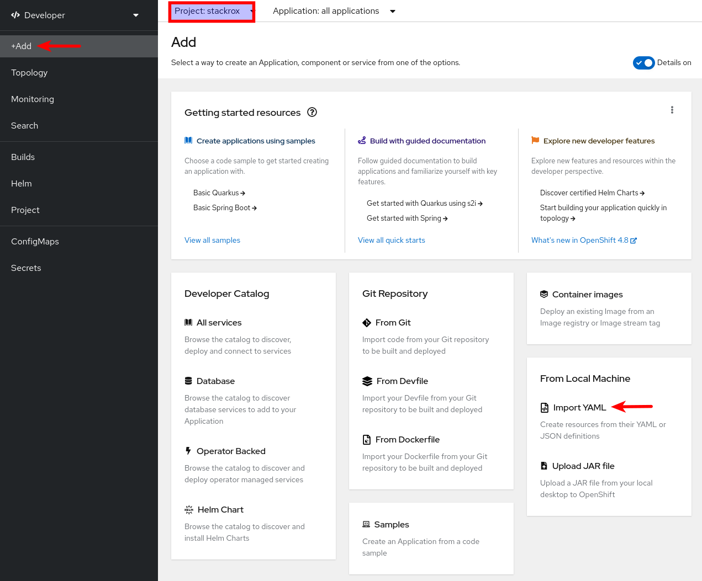
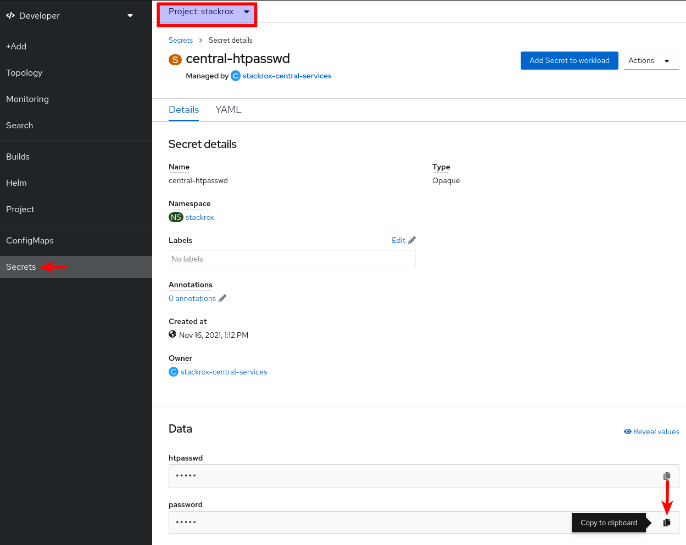
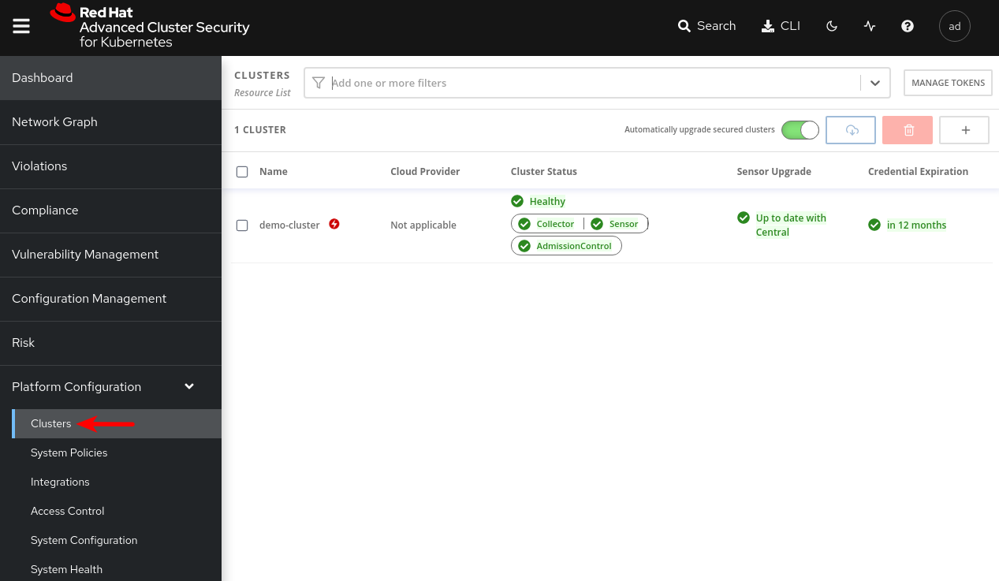

Getting Started
We will install ACS thought the RHACS Operator and afterwards we will install an small demo that will serve examples to our workshop.
| You can request in RHPDS the environment already installed (including the demo) - Go to Multi-Product Demo → Openshift 4 Advanced Cluster Security 4 |
RHACS Components
Red Hat Advanced Cluster Security for Kubernetes (ACS) consists of:
-
The
Centralservice, which exposes api and console and communicates with Sensors on secured clusters. -
The
Scannerservice, which has the role of scanning the deployed pods images. -
The
Sensor, which monitors your Kubernetes and OpenShift Container Platform clusters. -
The
Admision Controllerwhich prevent users from creating workloads that violate configured security policies. -
The
Collectorwhich moniotrs runtime activity on each node for your secured clusters. It reports to Sensor.
| You should check the specific version for you RHACS version to check memory/storage requirements ACS components and the sizing guidelines as well. |
RHACS Operator Installation
-
Find and the Advanced Cluster Security Operator from the Operator Hub.

-
Install the selected operator by clicking on the
Installbutton.
-
Confirm default installation parameters (auto update,
latest channel,rhacs-operatornamespace).
-
Wait for completion, the installation will take a few seconds.

-
When the installation finishes.

-
Access the now ready operator by clicking on the
View Operatorbutton.
| This step is not required if you are using the Cloud Service for Red Hat Advanced Cluster Security for Kubernetes (ACS). |
RHACS Central Cluster Installation
Once the operator has been installed we need to deploy the Central component. This component must be deployed in Red Hat OpenShift 4.9 or higher. However, it can be deployed in Kubernetes but you must carefully read Red Hat Advanced Cluster Security for Kubernetes Support Policy.
In this section we will deploy the Central component in the lab cluster. The Central is made up two main deployments:
-
The
centralservice, which exposes api and console and communicates with Sensors on secured clusters. -
The
scannerservice, which has the role of scanning the deployed pods images.
RHACS Central requirements
Central uses a database referred as Central DB (PostgreSQL 13) and both Central and PostgreSQL require persistent storage. SSD storage is recommended for best performance but different storage can be used as well.
| Using an external database is currently a Technology Preview and will not be covered in this workshop. |
RHACS requires external access to:
-
definitions.stackrox.io for downloading updated vulnerability definitions.
-
collector-modules.stackrox.io to download updated kernel support packages.
RHACS Central deployment
RHACS Central deployment can be performed in several ways:
-
Using roxctl (CLI)
-
Using Helm Charts
| This step is not required if you are using the Cloud Service for Red Hat Advanced Cluster Security for Kubernetes (ACS). |
Deploying Central using the ACS Operator (Web Console)
-
From the operator ready screen by clicking on
View Operatoror navigating to the Operators → Installed Operators page. Then, under the Provided APIs section, selectCreate Centralon theCentralAPI: -
Check the
YAMLradio button and paste theCentralCR you see below and click on theCreatebutton. -
You can check the progress by switching to the
Developerperspective, in theTopologymenu.
You can also do the same using the Developer perspective:
+ image::install/04_3_create_central_resource.png[ACS Operator 53, 800]
You can also do the same using the Developer perspective:
-
Within the
stackrockproject selected, +Add → Import YAML -
Paste the YAML content and click on the
Createbutton:
Deploying Central using the oc client (CLI)
Log in to your OpenShift cluster and create a new stackrox namespace (using the web console or the cli as follows). We will install our components here.
oc new-project stackroxThe following is an example of the central custom resource. You can do this in two ways, via the web console or via the CLI.
apiVersion: platform.stackrox.io/v1alpha1
kind: Central
metadata:
name: stackrox-central-services
namespace: stackrox
spec:
central:
exposure:
loadBalancer:
enabled: false
port: 443
nodePort:
enabled: false
route:
enabled: true
persistence:
persistentVolumeClaim:
claimName: stackrox-db
egress:
connectivityPolicy: Online
scanner:
analyzer:
scaling:
autoScaling: Enabled
maxReplicas: 5
minReplicas: 2
replicas: 3
scannerComponent: Enabled-
Create the
centralcustom resource using the template file provided in this repository.oc apply -f stackrox-central-services.yaml -n stackrox -
Monitor the installation using the watch option:
oc get pods -n stackrox -w
RHACS login
-
Once the installation is complete, obtain and copy the generated admin password from the
central-htpasswdsecret.-
Using the command line:
oc -n stackrox get secret central-htpasswd -o go-template='{{index .data "password" | base64decode}}' -
Using the web console, Secrets view from the
Developerperspective (search forcentral-htpasswdsecret):
-
-
Extract the hostname of the generated route from the command line as follows or using the
Topologyview from the web console.oc get routes/central -n stackrox -o jsonpath='{.spec.host}' -
Login to https://<route_hostname>; using the
adminusername and the password extracted before.
RHACS Secured Cluster Configuration
To import a cluster into ACS, you need to generate a cluster init bundle containing TLS secrets for Sensor, Collectors, and Admission Controllers.
Generating an init bundle by using the RHACS portal
-
Generate the cluster init bundle by accessing the
Integrationsubsection in thePlatform Configurationsection
-
Generate the bundle with a unique cluster name, in our case,
demo-cluster
-
Download the cluster init bundle secret.

-
Apply the cluster init bundle secret on the target secured cluster
oc apply -f ~/Downloads/demo-cluster-cluster-init-secrets.yaml -n stackroxYou can open the yaml file, copy the content and paste it to the web console using the +Add → Import YAML shortcut. As you are
cluster-adminand all the object have thenamespacekey set you will get all the object created in their respective namespaces regrardless the project you choose in the web console (all projects or whatever).
Installing secured cluster services
| This workshop uses the same cluster as central and secured cluster. In a real time scenario there will be many different secured clusters. Please ensure to install the ACS Operator in all the secured cluster in order to manage the SecuredCluster CR. |
The SecuredCluster custom resource is quite simple. The following example shows the configuration for a demo-cluster target. Notice the collector configuration, with the collection method set to EBPF. The alternative collection approach would be KernelModule. The TolerateTaints lets the Collector daemonset be deployed also on nodes with special taints, like the ODF nodes.
apiVersion: platform.stackrox.io/v1alpha1
kind: SecuredCluster
metadata:
name: stackrox-secured-cluster-services
namespace: stackrox
spec:
admissionControl:
listenOnCreates: true
listenOnEvents: true
listenOnUpdates: true
clusterName: demo-cluster
perNode:
collector:
collection: EBPF
imageFlavor: Regular
taintToleration: TolerateTaints| Check the settings of the SecuredCluster operator documentation for more information. |
-
Create the Secured Cluster custom Resource using (and optionally custumizing) the example provided in the repository.
oc apply -f stackrox-secured-cluster-services.yaml -n stackroxOr using the web console, in the ACS opertator view, as follows:
-
Under the Provided APIs section, select Create instance on the Secured Cluster API

-
And then copy & paste the yaml content

Or as in the previous section, with the +Add → Import YAML path.
-
-
Monitor the installation using the watch option (or using the web console
Topologyview from theDeveloperperspective as mentioned before):oc get pods -n stackrox -w -
At the end of the installation, go to the central console and check the correct attachment of the secured cluster.

Deploying ACS manually
We have seen how to deploy ACS using the web user interface but, sometimes it is necessary to automate the deployment using tools such ansible for instance.
Let’s see how to manually, using the CLI, we can deploy ACS so we will be able to automate it with any tool.
First we need to create a namespace to deploy the ACS operator:
oc new-project rhacs-operatorWe need to create the operator group creating the following yaml file:
apiVersion: operators.coreos.com/v1
kind: OperatorGroup
metadata:
name: rhacs-operator
namespace: rhacs-operatorApply the file to create the operator group:
oc apply -f acs-operator-group.yaml -n rhacs-operatorCreate the subscription yaml file:
apiVersion: operators.coreos.com/v1alpha1
kind: Subscription
metadata:
name: rhacs-operator
namespace: rhacs-operator
labels:
operators.coreos.com/rhacs-operator.rhacs-operator: ''
spec:
channel: stable
installPlanApproval: Automatic
name: rhacs-operator
source: redhat-operators
sourceNamespace: openshift-marketplaceApply the subscription file:
oc apply -f subscription.yamlAt this moment the ACS operator will be installing. It will take sometime to install. Not much, just a few seconds.
Now we need to deploy central. So the first thing is to create the namespace where Central will be deployed:
oc new-project stackroxThe following is an example of the central custom resource:
apiVersion: platform.stackrox.io/v1alpha1
kind: Central
metadata:
name: stackrox-central-services
namespace: stackrox
spec:
central:
exposure:
loadBalancer:
enabled: false
port: 443
nodePort:
enabled: false
route:
enabled: true
persistence:
persistentVolumeClaim:
claimName: stackrox-db
egress:
connectivityPolicy: Online
scanner:
analyzer:
scaling:
autoScaling: Enabled
maxReplicas: 5
minReplicas: 2
replicas: 3
scannerComponent: EnabledCreate the custom resource:
oc apply -f stackrox-central-services.yaml -n stackroxCentral will be deployed. You can check it:
oc get pods -n stackrox -wNow you will need to get the ACS admin password:
oc -n stackrox get secret central-htpasswd -o jsonpath="{.data['password']}" | base64 -dand the ACS Central console URL:
oc -n stackrox get routes/central -o jsonpath='{.spec.host}'Once the ACS Central is deployed we will need to add clusters into ACS. To add the cluster where we have deployed Central to ACS we need to download the roxctl command.
| You will need to download the version matching the ACS version you have deployed. You can also use a containerized version, but in this workshop we will use the command line tool. |
We use the roxctl to create the init bundle:
roxctl -e <ACS CONSOLE URL>:443 central init-bundles generate demo-cluster --insecure-skip-tls-verify --output-secrets /tmp/demo-cluster.yaml --password <ACS ADMIN PASSWORD>Apply the init bundle:
oc -n stackrox apply -f /tmp/demo-cluster.yamlThe secured cluster resource yaml file:
apiVersion: platform.stackrox.io/v1alpha1
kind: SecuredCluster
metadata:
name: acs-secured-cluster-services
namespace: stackrox
spec:
admissionControl:
listenOnCreates: true
listenOnEvents: true
listenOnUpdates: true
clusterName: demo-cluster
perNode:
collector:
collection: EBPF
imageFlavor: Regular
taintToleration: TolerateTaints oc -n stackrox apply -f secured-cluster.yamlAfter that the cluster will have been included in ACS.
Deploying Demo in RHACS - Mandatory
| Independent of which option to install you used, you need to deploy the ACS Demo into your cluster. |
-
Download the repo with the demo:
ansible-galaxy collection install kubernetes.core pip install kubernetes jmespath git clone https://github.com/rh-mobb/rhacs-demo cd rhacs-demo -
Apply the ansible demo into the cluster:
you must be logged to the OpenShift cluster before you execute the playbook. ansible-playbook rhacs-demo.yaml -e stackrox_central_admin_password=[your_pass](1)1 The same password you obtained in the step 1 of the ACS loginsection. -
After the Playbook execution (and if everything worked properly), the output will be the following:
TASK [ocp4_workload_stackrox_demo_apps : post_workload tasks complete] ******************************************************** ok: [localhost] => { "msg": "Post-Workload Tasks completed successfully." }
Deploying Apps - Optional
If you do not plan to follow the remaining sections (which are based on deploying the demo) and prefer to play and make your own findings, simply follow the steps below:
-
Create a new project:
oc new-project test -
Start some applications with critical vulnerabilities:
oc run shell --labels=app=shellshock,team=test-team \ --image=vulnerables/cve-2014-6271 -n testoc run samba --labels=app=rce \ --image=vulnerables/cve-2017-7494 -n test -
Navigate to the RHACS portal to view the violations.